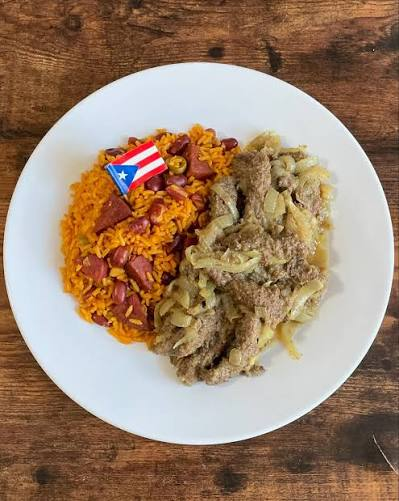

Traditional Puerto Rican Style Bistec
This classic homemade bistec features a juicy, flavorful steak seasoned to perfection. It's a simple yet satisfying dish that's perfect for any occasion.
It is the ultimate comfort meal for family dinners and gatherings. Serve it warm with a side of garlic bread or a crisp green salad.
Ingredients:
- 1 lb beef steak
- 2 tbsp olive oil
- 1 tsp garlic powder
- 1 tsp paprika
- 1/2 tsp cumin
Steps:
- Preheat the oven to 375°F (190°C).
- Season the beef steak with garlic powder, paprika, and cumin.
- Heat the olive oil in a large skillet over medium-high heat.
- Seared the beef steak for 4-5 minutes on each side, or until desired doneness is reached.
- Let the steak rest for a few minutes before slicing and serving.